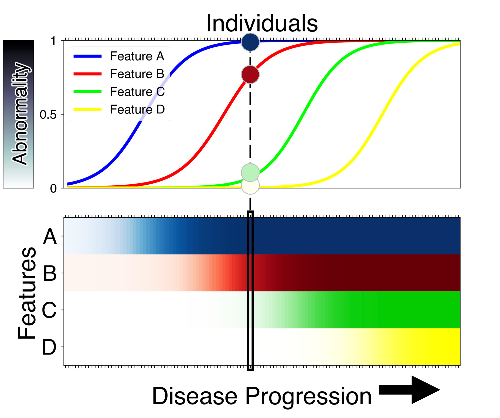

Event Based Model¶
Background¶
The event-based model (EBM) of disease progression was invented in 2011 by Hubert Fonteijn and Danny Alexander. Hubert’s IPMI 2011 conference paper won the prestigious Erbsmann Prize, and was published in full form in this NeuroImage 2012 article using a small dataset from two rarer inherited neurodegenerative diseases: familial Alzheimer’s disease and Huntington’s disease.
The EBM methodology was generalised to sporadic disease by Alex Young and colleagues in her 2014 Brain paper and has since seen wide application (and methodological updates) across multiple neurodegenerative diseases including familial Alzheimer’s disease, Huntington’s disease, posterior cortical atrophy (also here), Parkinson’s disease, Down sydrome, amyotrophic lateral sclerosis, and more.
The EBM is uniquely capable of estimating an ordered sequence of disease progression events, along with uncertainty in that ordering, using only cross-sectional data — a single visit per patient. This is powerful for two reasons. First, disease progression can be estimated from smaller, and more widely-available cross-sectional datasets. Second, in real-world (future) clinical applications, new patients can be assessed on the spot at their first visit — without the need for any patient history, nor the need to wait for a follow-up visit that might require them to wait in uncertainty for a year or more. Of course, the limitation of using only cross-sectional data is that timescales of disease progression are much harder to estimate without further information.
You might ask “How is it possible to estimate a sequence of disease progression events from a single visit across multiple patients?”
The concept behind the EBM is quite simple and is based on one key assumption: disease progression is irreversible. This assumption is valid in chronic, progressive diseases if there is no disease-modifying intervention. To explain the concept, we borrow here from the analogy in (Oxtoby, et al., Brain 2021): imagine that the common cold was a chronic irreversible condition. If all patients who present with the common cold have a cough, but only some of these also have a sneeze, then we would infer with very high confidence that coughing comes before sneezing in the disease progression sequence. Any variability across individuals would decrease the certainty in this conclusion. The EBM uses this concept across multiple symptoms (more generally, biomarkers) to both estimate the disease progression seqeunce, and uncertainty in the sequence.
An important assumption made in EBM is that the ordering of events is common for all the subjects in a dataset. However, neurodegenerative diseases such as Alzheimer’s disease are notoriously heterogeneous; pathologically as well as in their clinical presentation in patients. There are differences between different patients in terms of the pathways of progression, and the effect the progression has on a patient’s cognition. Discriminative EBM (DEBM) model, invented in 2017 by Vikram Venkatraghavan and colleagues IPMI 2017 conference paper and later published as a journal article in NeuroImage, estimates the orderings robustly in the presence of such heterogeneity. Apart from estimating the sequence of events, DEBM also estimates the relative temporal distance between the events, as illustrated below.
These improvements helped a DEBM based method end up as one of the winning methods of the coveted TADPOLE challenge. The robustness of DEBM was further verified in multi-centre studies in AD and genetic FTD.
Getting started:¶
To see what the model is capable of:
icobrain dm from the EuroPOND consortium.
The EBM is embedded within the icobrain dm clinical tool as an experimental report.
Take a look at the python code from the UCL POND group on GitHub:
KDE EBM from (Firth et al., Alzheimers Dement 2020). This is a more flexible version capable of handling skewed biomarker data by using kernel density estimation (KDE) mixture modelling instead of Gaussian mixture modelling.
An integrated python toolbox for DEBM and EBM developed by Vikram Venkatraghavan can be accessed here. This toolbox also capable of efficiently analyzing the effects of certain genetic factors on nerodegeneration as published recently in Venkatraghavan et al., NeuroImage 2021
Some scientific papers about the EBM method: